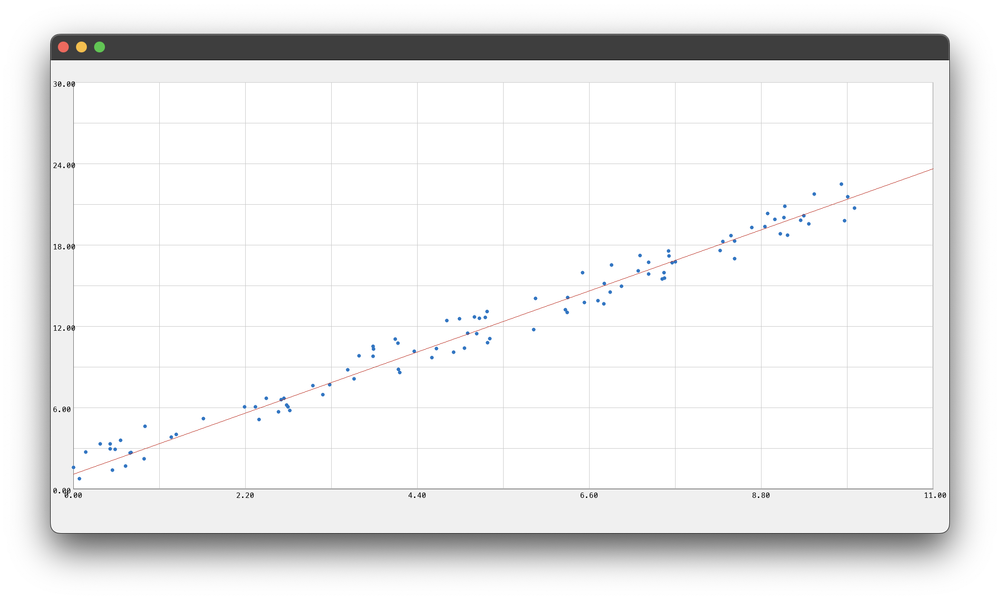

Linear Regression Example
#! /usr/bin/env ylc -i
import std/Math;
import std/Arrays;
let X = array_fill 100 (fn i -> Math.rand_double_range 0. 10.);
let Y = array_fill 100 (fn i -> 2. * X[i] + 3 * Math.rand_double ());
let forward = fn (pw, pb) x ->
let out_feat = array_size pb;
let out = array_fill_const (out_feat * (array_size x)) 0.;
for i = 0 to (array_size out) in (
out[i] := pb[0] + pw[0] * x[i]
);
out
;;
type TLinear = (
weight: Array of Double,
bias: Array of Double
);
let Linear = fn in_feat out_feat ->
(
weight: array_fill (in_feat * out_feat) Math.rand_double,
bias: array_fill out_feat Math.rand_double,
)
;;
let mse_loss = fn prediction y ->
let aux_rec = fn i res y p ->
match i >= array_size p with
| true -> res
| _ -> (
let pred_val = p[i] in
let target_val = y[i] in
let diff = pred_val - target_val in
let squared_diff = diff * diff in
let new_res = res + squared_diff in
aux_rec (i + 1) new_res y p
)
;;
let total_error = aux_rec 0 0.0 y prediction in
let count = array_size prediction in
total_error / count
;;
let sgd_optim = fn learning_rate model: (TLinear) pred X y ->
let n = array_size pred;
let grad_weight = [| 0. |];
let grad_bias = [| 0. |];
for i = 0 to n in (
let error = pred[i] - y[i];
let x_i = X[i];
grad_weight[0] := grad_weight[0] + (2. * error * x_i / n);
grad_bias[0] := grad_bias[0] + (2. * error / n)
);
model.weight[0] := model.weight[0] - learning_rate * grad_weight[0];
model.bias[0] := model.bias[0] - learning_rate * grad_bias[0];
model
;;
let model = Linear 1 1;
let train = fn model: (TLinear) epochs ->
match epochs with
| 0 -> model
| _ -> (
let pred = forward (model.weight, model.bias) X;
let l = mse_loss pred Y;
let m = sgd_optim 0.01 model pred X Y;
train m (epochs - 1)
)
;;
train model 100;
# Optional to view the scatter plot of input data vs the interpolated line:
# NB: using the Gui library requires using the ylc -i option in order to keep
# the parent process running and able to create windows
import gui/bindings/Gui;
Gui.create_decl_ui (fn () ->
let p = Gui.Plt 0. 11. 0. 30.;
let s = Gui.Scatter p (array_size X) (cstr X) (cstr Y);
let l = Gui.LinePlt
p
2
([|0., 11.|] |> cstr)
([|0., 11.|] |> forward (model.weight, model.bias) |> cstr)
;
)
here's an example output plot: 
Further example programs here